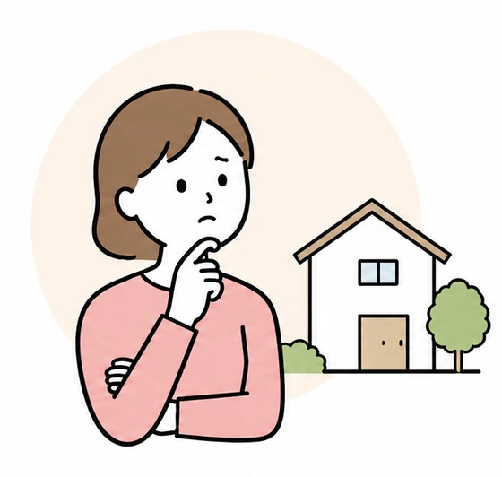
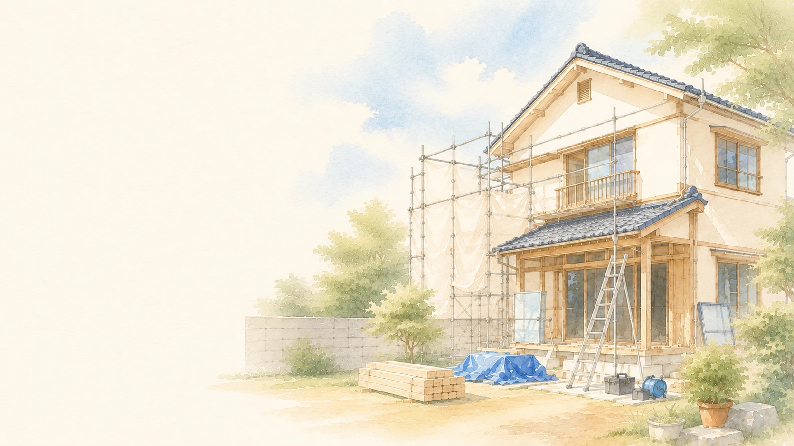
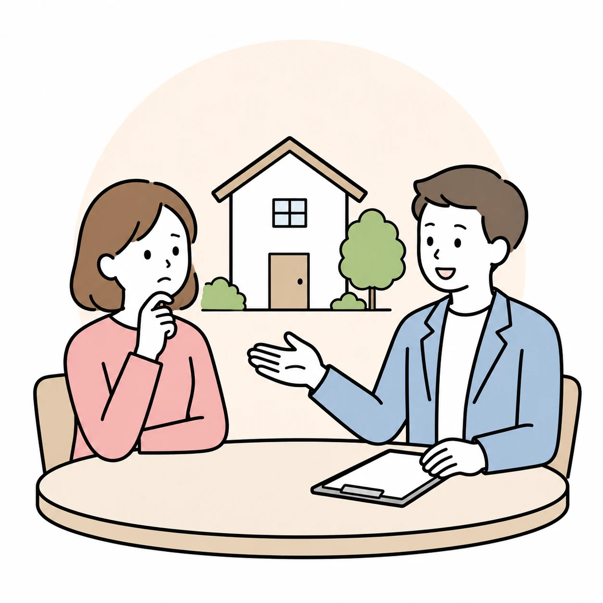
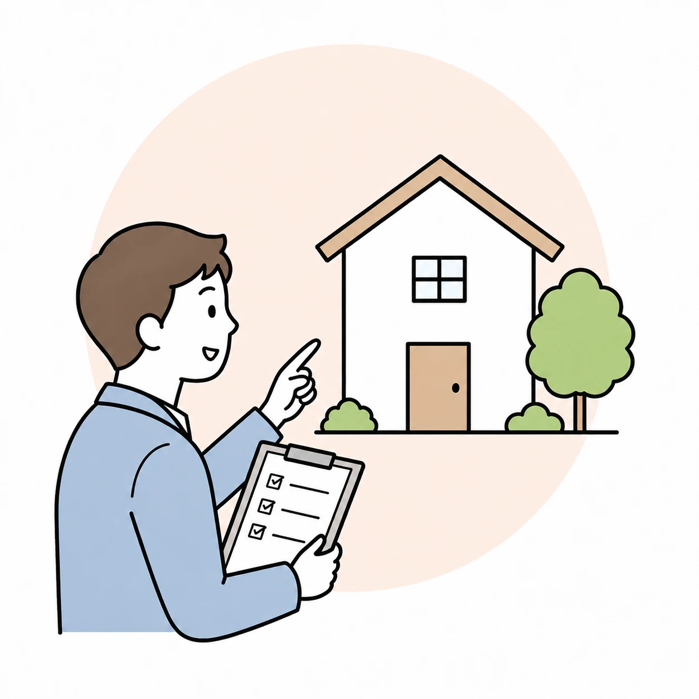
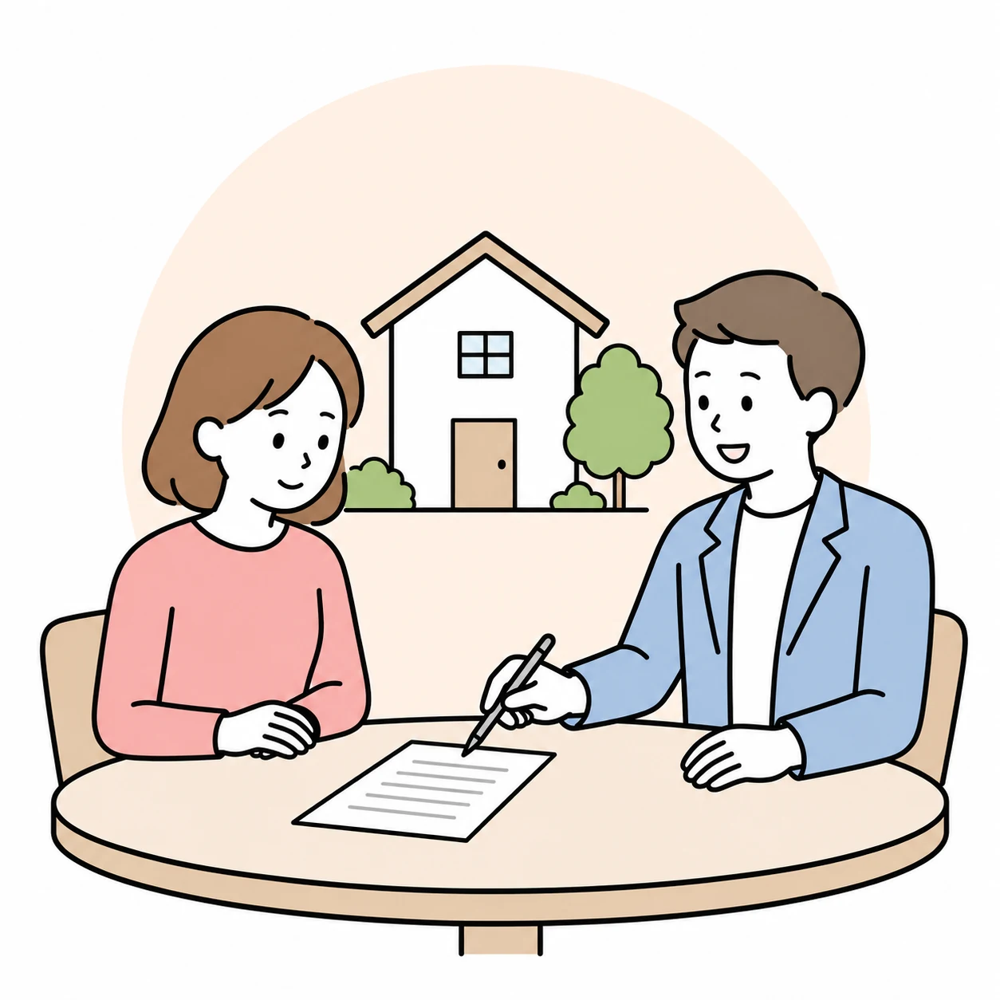
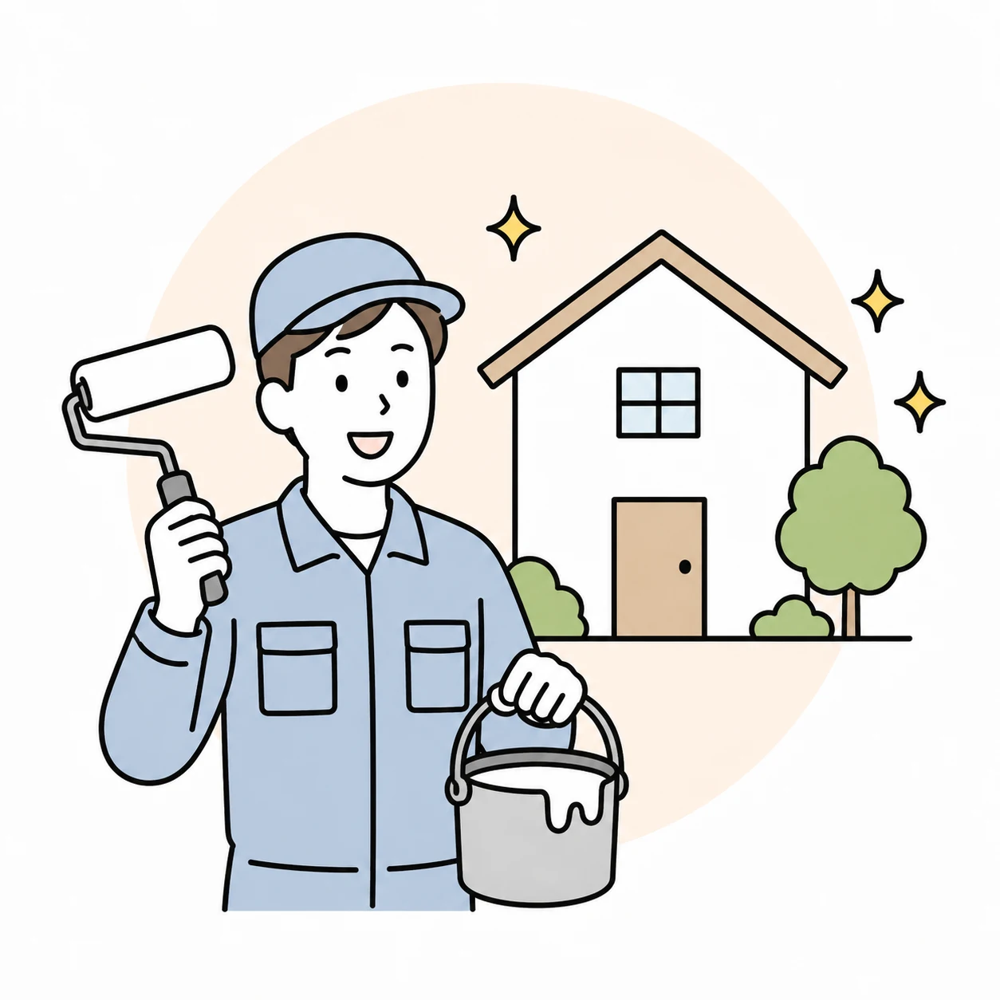
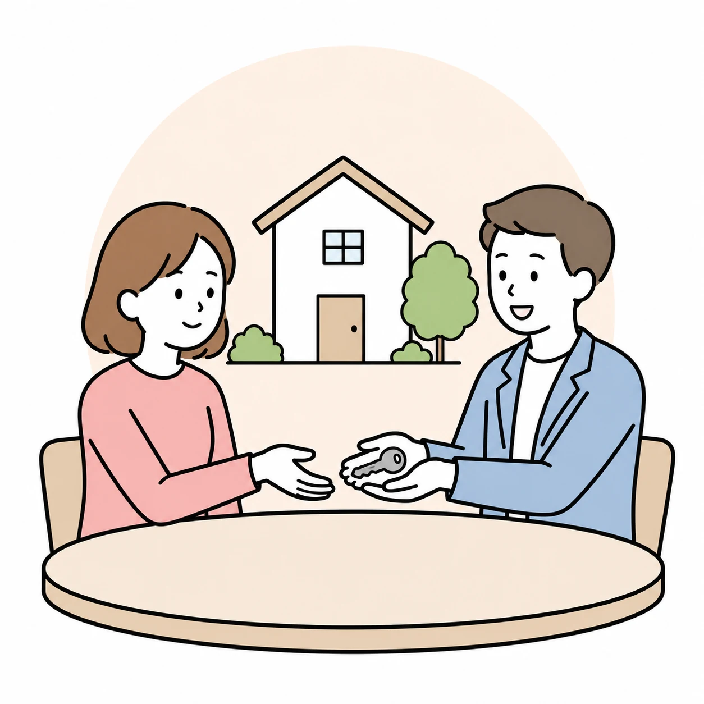

思い出の家だから、
できれば手放したくない

PROBLEM
売却、費用、管理、手続き。空き家の活用には、最初に越えるべき不安がいくつもあります。

思い出の家だから、
できれば手放したくない
売っても大きな
金額にならなさそう
リフォーム費用を
かけるのは難しい
不動産や賃貸のことが
難しくてよくわからない
SOLUTION
空き家を「売る」のではなく、住まいとして再生し、賃貸運営を通して再び価値を生み出す仕組みです。
01
所有者様の大きな初期負担を無くし、賃貸できる状態へ整えます。
02
水回りや内装など、住まいとして必要な機能を整えます。
03
入居者募集から運営中の対応まで、当社が中心となって進めます。
04
費用回収完了または満10年の早い時点を目安に、所有者様へ返還します。
SERVICE MODEL
所有者様の空き家を当社がお預かりし、当社投資でリノベーションを実施します。その後、賃貸運営による収益から工事費用や運営費用を回収し、契約条件に基づいて返還します。
詳しい契約条件、登記、費用回収、返還時の取り扱いについては、事業紹介ページにて説明しています。
事業紹介ページを見る空き家を預ける
リノベーション費用を投資
家賃収入から費用回収
費用回収完了または最長10年
FLOW
トップページでは全体像が分かるよう、相談から返還までを5つに整理しています。詳細な契約内容は事業紹介ページで確認できます。
STEP 01

空き家の所在地、状態、所有者様のご希望をお伺いします。
STEP 02

建物内部や関係書類を確認し、活用可能性を検討します。
STEP 03

契約内容を確認したうえで、改修計画を進めます。
STEP 04

当社投資でリノベーションし、入居者募集と賃貸運営を行います。
STEP 05

費用回収完了または満10年の早い方を目安に、所有者様へ返還します。
TRUST
空き家を預けるには、費用・契約・工事・運営の見通しが重要です。ここでは、信頼につながる要素を簡潔に伝えます。
建物の状態確認からリノベーション、賃貸運営まで、複数の視点で空き家活用を検討します。
リノベーション費用や賃貸運営にかかった費用、家賃収入の状況を確認できるようにします。
必要に応じてWeb会議なども活用し、遠方にお住まいの所有者様にも分かりやすく説明します。
TARGET
駅から徒歩15分程度までのエリアを中心に、築年数や空き家の状態を問わず相談を受け付けています。対象になるか迷う場合も、まずは所在地と現在の状態をお知らせください。
空家募集ページを見る現在の募集エリアです。
賃貸需要を見込みやすい立地を中心に確認します。
建物の状態は調査のうえで判断します。
FAQ
詳細条件は個別の建物や契約内容により変わります。ここでは、最初に不安になりやすい点だけを整理しています。
当社投資でリノベーションを行い、賃貸運営による収益から費用回収を行う仕組みです。個別条件は物件調査後に確認します。
現在は神戸〜阪神間、駅から徒歩15分程度までのエリアを中心に募集しています。築年数や空き家状態は問いません。
費用回収完了または満10年の早い方を目安に、契約条件に基づいて返還します。返還時の詳細は契約前に確認します。
費用の透明性を確保するため、リノベーション費用や賃貸運営費、家賃収入の状況を開示する方針です。
原則としてメールでやり取りし、契約内容など詳細な相談が必要な場合は電話、面談、Web会議などで説明します。
CONTACT
所在地や建物の状態が分かる範囲で問題ありません。売却以外の選択肢として活用できる可能性を、一緒に確認します。
お問い合わせボタンを押すと、Googleフォームが開きます。所在地や建物の状態など、分かる範囲でご入力ください。